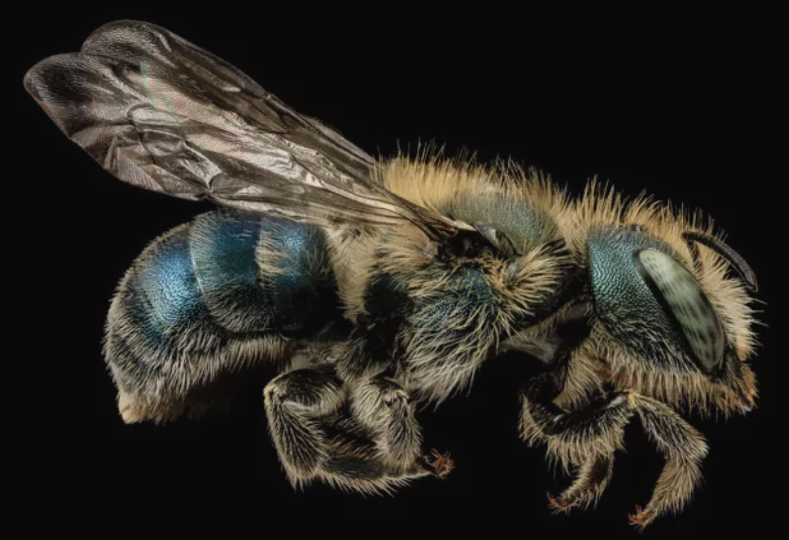

Mason bees are small, fast-flying bees that are extremely agile and are metallic blue, dull green and black. These bees carry pollen in hairs on the underside of their abdomens instead of in little baskets on their legs. Mason bees get their name from their use of mud to close their nest cavities.In nature, they look for a hollowed-out stem or a twig. Mason bees also readily use bee hotels created by humans that have holes already drilled in for them.
Do they sting:
Male mason bees cannot sting, and female mason bees are so docile that they sting only when handled roughly or trapped under clothing for example.
Do they pollinate:
Yes, the pollinate a wide variety of flowers and fruit producing flowers that are near their nests.